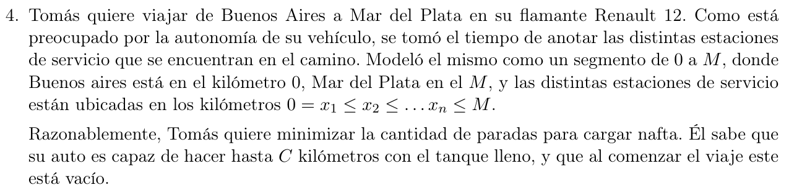
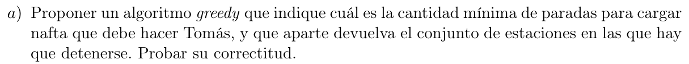

Ante todo voy a asumir que existe camino válido, y no adjuntamos M al resultado final ya que no es una estación (o al menos eso asumo)
\(S = \left\{ 0,x_{2},\ldots,x_{n},M \right\}\)
\(S_{a}\) es la última parada en la que cargué nafta
La idea es ver \(\forall j::S_{j} - S_{a} > C\underset{L}{\rightarrow}\) \(a ::= j - 1 \land R \cup S_{a}\)
RutaEficiente(S,C):
n = |S|
a = 1
R = [0]
for j: 2..n+1:
if S[j]-S[a] > C:
a = j-1
R.append(S[a])
return R
\(S = \left\{ 0,x_{2},\ldots,x_{n},M \right\}\)
\(S_{a}\) es la última parada en la que cargué nafta
Sea \(O\) una solución óptima, queremos ver que nuestra solución greedy \(G\) es tan buena como \(O\).
Por inducción fuerte en la cantidad \(R\) estaciones a detenerse:
Caso base |R|=1:
Siempre empezamos con \(0\) nafta, en el kilómetro 0 y sabemos que \(S_{1} = 0\) por lo que \(R = \left\{ 0 \right\}\), que es exactamente lo que calcula \(G\) en el primer paso. Trivialmente, \(G\) es igual de óptima que \(O\).
Paso inductivo:
HI: \(\forall j < k\), \(G\) es igual de óptima que \(O\), o sea, ambas computaron \(|R| = j\) en el \(j\)-ésimo paso.
Por HI sabemos que tanto \(G\) como \(O\) tienen exactamente \(k - 1\) estaciones acumuladas en \(R\).
En la \(k\)-ésima estación válida en \(G\):
Tomamos \(S_{k} - S_{k - 1} > C\underset{L}{\rightarrow}R = R \cup S_{k - 1}\)
Si \(O\) toma \(S_{k - 1}\) entonces \(G\) es igual de óptima.
Si \(O\) no toma \(S_{k - 1}\) entonces tenemos 2 opciones:
Caso 1:
La anterior estación en la que se cargó nafta en la solución \(O\) en el paso \(k\) es \(S_{a}\):
Un \(S_{j} \leq S_{k - 1},S_{j}\) es una estación válida, pero dijimos que no toma \(S_{k - 1}\), por lo que agarra un \(S_{j}\) óptimo, y \(|R \cup S_{j}| = |R \cup S_{k - 1}|\) por lo que son igual de óptimas.
Caso 2: La anterior estación en la que se cargó nafta en la solución \(O\) en el paso \(k\) es \(S_{j} \neq S_{k - 1}\):
Opciones:
Caso \(j > k - 1\)
Absurdo! \(G\) supone que \(S_{k - 1}\) es la última estación posible tal que \(S_{k} - S_{k - 1} \leq C\), por lo que \(j\) no puede ser mayor a \(k - 1\)
Caso \(j < k - 1\)
Si \(j < k - 1\) entonces toma \(S_{j}\), y \(|R \cup S_{k - 1}| = |R \cup S_{j}|\) por lo que \(G\) es igual de óptimo que \(O\)
Por lo que el \(k\)-ésimo paso es óptimo, entonces por inducción, \(G\) es tan óptima como \(O\).
public static List<Integer> rutaEficiente(List<Integer> S, int C) {
int n = S.size();
List<Integer> R = new ArrayList<>();
int a = 0;
R.add(S.get(0));
for (int j = 1; j<n ;j++) { //O(n)
if (S.get(j)-S.get(a) > C) {
a = j-1;
R.add(S.get(a));
}
}
return R;
}